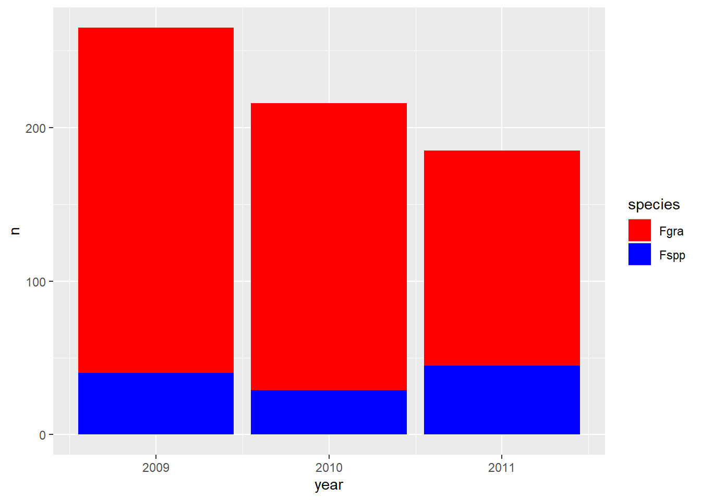
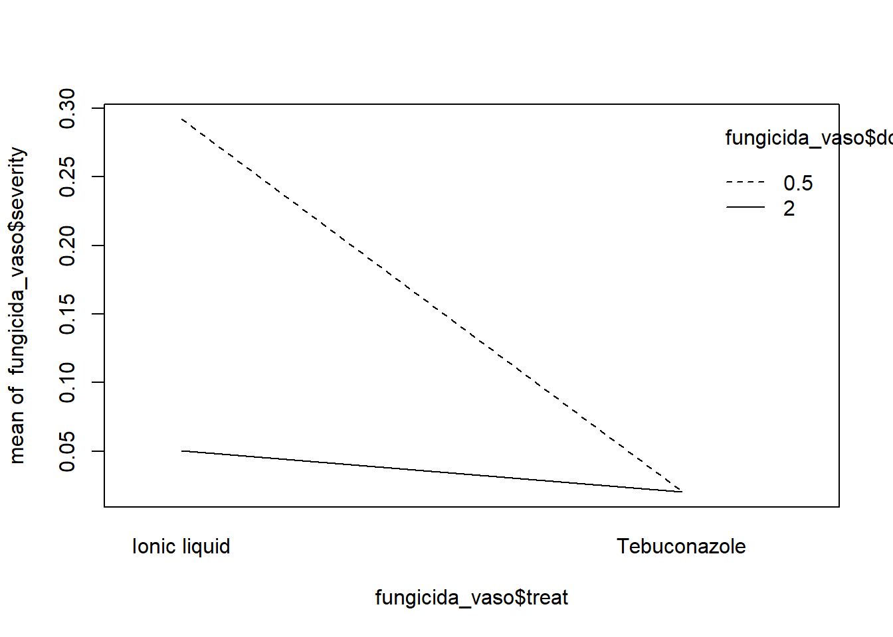
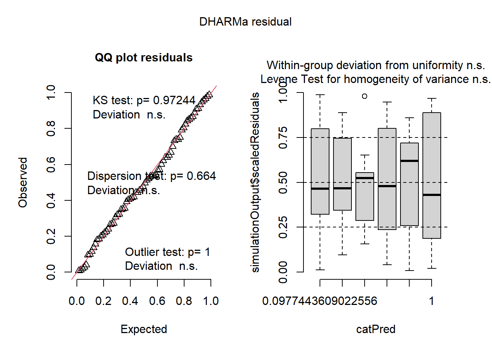

### Instalando pacotes no R. # Instalar pacotes (executar apenas uma vez)options(repos =c(CRAN ="https://cloud.r-project.org"))install.packages("tidyverse")
Instalando pacote em 'C:/Users/vitor/AppData/Local/R/win-library/4.5'
(como 'lib' não foi especificado)
pacote 'tidyverse' desempacotado com sucesso e somas MD5 verificadas
Os pacotes binários baixados estão em
C:\Users\vitor\AppData\Local\Temp\RtmpYVYbPp\downloaded_packages
install.packages("agricolae")
Instalando pacote em 'C:/Users/vitor/AppData/Local/R/win-library/4.5'
(como 'lib' não foi especificado)
pacote 'agricolae' desempacotado com sucesso e somas MD5 verificadas
Os pacotes binários baixados estão em
C:\Users\vitor\AppData\Local\Temp\RtmpYVYbPp\downloaded_packages
── Conflicts ────────────────────────────────────────── tidyverse_conflicts() ──
✖ dplyr::filter() masks stats::filter()
✖ dplyr::lag() masks stats::lag()
ℹ Use the conflicted package (<http://conflicted.r-lib.org/>) to force all conflicts to become errors
library(agricolae)### Exemplo com Gráfico Básico# Criar dados de exemplodates <-c(7,14,21,28,35,42)severity <-c(0.1,5,10,35,50,60)data_curva <-data.frame(dates, severity)# Gráfico de colunas e linhadata_curva |>mutate(severity2 =c(1,10,35,58,70,82)) |>ggplot(aes(dates, severity2)) +geom_col(fill ="black") +geom_line(linewidth =2, color ="purple") +geom_point(size =5, color ="black") +labs(title ="Progresso da doença ao longo dos dias",x ="Dias após plantio",y ="Severidade (%)" ) +theme_classic()
## Dicas Rápidas#1. **Atalhos úteis**:# - `Ctrl + Enter`: Executa linha selecionada# - `Alt + -`: Insere `<-` automaticamente#2. **Boas práticas**:# - Use nomes descritivos para objetos (`dados_plantas` em vez de `df1`)# - Comente seu código com `#` para explicar etapas importantes#3. **Para saber mais**:# - [Documentação do R](https://www.r-project.org/)# - [Cheatsheet do tidyverse](https://www.tidyverse.org/learn/)
Aula 2 – Importando dados externos
Os tópicos desta aula foram:
Importação de dados de Excel e Google Sheets;
Manipulação com dplyr (filtros, contagens, seleção);
Visualização com ggplot2 (gráficos customizados);
Combinação de gráficos com patchwork ;
options(repos =c(CRAN ="https://cloud.r-project.org"))# Carregando os pacotes necessários para essa aulalibrary(tidyverse) # Carrega o conjunto de pacotes do tidyverselibrary(readxl) # Para leitura de arquivos Excel (.xls/.xlsx)library(writexl) # Para exportar dados em formato .xlsxlibrary(gsheet) # Para importar planilhas do Google Sheetslibrary(janitor) # Para tabelas limpas e funções como 'tabyl'
Anexando pacote: 'janitor'
Os seguintes objetos são mascarados por 'package:stats':
chisq.test, fisher.test
library(ggthemes) # Temas visuais para gráficos com ggplot2library(patchwork) # Para combinar múltiplos gráficos ggplot#---------------------------------------# 1. Importação de dados locais#---------------------------------------# Lê a 2ª planilha do arquivo Excel (essa contém 'dose')dados2 <-read_excel("dados-diversos.xlsx", sheet =2)print(colnames(dados2)) # Verificar colunas da planilha 2, confirmar que 'dose' existe
#---------------------------------------# 2. Importação de dados adicionais#---------------------------------------# Lê um arquivo .csvcurve <-read.csv("curva.csv")# Exporta os dados em dois formatoswrite_xlsx(curve, "curva2.xlsx")write.csv(curve, "curve2.csv", row.names =FALSE)#---------------------------------------# 3. Importação de dados da nuvem (Google Sheets)#---------------------------------------# Importa planilhas públicas do Google Sheetsdados_nuvem <-gsheet2tbl("https://docs.google.com/spreadsheets/d/1bq2N19DcZdtax2fQW9OHSGMR0X2__Z9T/edit?gid=373270992")dados_mg <-gsheet2tbl("https://docs.google.com/spreadsheets/d/1bq2N19DcZdtax2fQW9OHSGMR0X2__Z9T/edit?gid=983033137")survey <-gsheet2tbl("https://docs.google.com/spreadsheets/d/1bq2N19DcZdtax2fQW9OHSGMR0X2__Z9T/edit?gid=1118819738")#---------------------------------------# 4. Exploração inicial dos dados 'survey'#---------------------------------------# Contagem por grupossurvey |>group_by(state) |>count()
# A tibble: 2 × 2
# Groups: state [2]
state n
<chr> <int>
1 PR 216
2 RS 450
survey |>group_by(species) |>count()
# A tibble: 2 × 2
# Groups: species [2]
species n
<chr> <int>
1 Fgra 552
2 Fspp 114
# A tibble: 3 × 3
# Groups: state, residue [3]
state residue n
<chr> <chr> <int>
1 PR <NA> 216
2 RS corn 169
3 RS soybean 281
# Filtro por estados específicosRS <- survey |>filter(state =="RS")PR <- survey |>filter(state =="PR")# Combina os dados dos dois estadoscombinado <-rbind(RS, PR)#---------------------------------------# 5. Seleção e filtragem de colunas#---------------------------------------# Seleciona apenas algumas colunassurvey_b <- survey |>select(year, state, species)# Alternativa explícita com dplyr:: (equivalente)survey_b <- survey |> dplyr::select(year, state, species)# Filtra dados apenas do ano de 2009survey_2009 <- survey |>select(year, state, species) |>filter(year ==2009)#---------------------------------------# 6. Tabelas de contingência#---------------------------------------# Frequência cruzada entre ano e espéciesurvey_b |>tabyl(year, species)
#---------------------------------------# 7. Visualizações com ggplot2#---------------------------------------# Gráfico de colunas por espécie e anosurvey_b |>group_by(year, species) |>count() |>ggplot(aes(year, n)) +geom_col() +facet_wrap(~species)
# Gráfico colorido manualmentesurvey_b |>group_by(year, species) |>count() |>ggplot(aes(year, n, fill = species)) +geom_col() +scale_fill_manual(values =c("red", "blue"))

# Gráfico em escala de cinzasurvey_b |>group_by(year, species) |>count() |>ggplot(aes(year, n, fill = species)) +geom_col() +scale_fill_grey()
# Gráfico com paleta viridis (mais acessível)survey_b |>group_by(year, species) |>count() |>ggplot(aes(year, n, fill = species, color = species)) +geom_col() +scale_fill_viridis_d()
#---------------------------------------# 8. Visualizações do conjunto 'mg'#---------------------------------------# Importa os dados novamente (já feito antes, poderia ser omitido)mg <- dados_mg# Gráfico de dispersão simplesmg |>ggplot(aes(trat, comp)) +geom_point()
# Gráfico com jitter para melhor visualizaçãomg |>ggplot(aes(trat, comp)) +geom_jitter(width =0.1) +scale_y_continuous(limits =c(0, 20))
# Boxplot com jitter sobrepostomg |>ggplot(aes(trat, comp)) +geom_boxplot() +geom_jitter(width =0.1, color ="gray50") +scale_y_continuous(limits =c(0, 20)) +labs(x ="Tratamento", y ="Comprimento (mm)") +theme_classic()
# Gráfico final formatadoplot_mg <- mg |>ggplot(aes(trat, comp)) +geom_boxplot(fill ="#056646", outlier.colour =NA) +geom_jitter(width =0.1, color ="gray50") +scale_y_continuous(limits =c(0, 20)) +labs(x ="Tratamento", y ="Comprimento (mm)",title ="Efeito do magnésio",subtitle ="Tamanho da lesão da mancha",caption ="Betim, V. R. P. B" ) +theme_classic(base_size =14)# Salva o gráfico em PNGggsave("box.png", plot = plot_mg, bg ="white", width =5, height =4)#---------------------------------------# 9. Gráfico micelial#---------------------------------------micelial <-gsheet2tbl("https://docs.google.com/spreadsheets/d/1bq2N19DcZdtax2fQW9OHSGMR0X2__Z9T/edit?gid=959387827")plot_micelial <- micelial |>ggplot(aes(x =reorder(especie, tcm), y = tcm)) +geom_boxplot(fill ="white", outlier.colour =NA) +geom_jitter(width =0.1) +coord_flip() +labs(x ="Espécie", y ="TCM (mm)",title ="Taxa de crescimento micelial",caption ="Fonte: V. Betim (2021)" ) +theme_clean()#---------------------------------------# 10. Combinação de gráficos com patchwork#---------------------------------------# Combina os dois gráficos lado a ladocombo_plot <- (plot_mg + plot_micelial) +plot_annotation(tag_levels ="A")# Salva o gráfico combinadoggsave("combo1.png", combo_plot, bg ="white", width =8, height =4)
Aula 3 – Estatística
Este script R apresenta uma análise estatística completa, organizada em quatro tópicos principais:
Importação e Visualização de Dados;
Testes Estatísticos para Comparação de Grupos;
Análise de Variância (ANOVA) e Comparações Múltiplas;
Modelagem Estatística Avançada e Diagnóstico;
options(repos =c(CRAN ="https://cloud.r-project.org"))# ---------- Pacotes essenciais ----------library(gsheet) # Importar dados direto do Google Sheetslibrary(ggplot2) # Gráficoslibrary(dplyr) # Manipulação de dadoslibrary(tidyr) # Manipulação de dados (pivot_wider etc)library(rstatix) # Testes estatísticos fáceis
Anexando pacote: 'rstatix'
O seguinte objeto é mascarado por 'package:janitor':
make_clean_names
O seguinte objeto é mascarado por 'package:stats':
filter
library(ggpubr) # Gráficos com testes estatísticoslibrary(report) # Reporte automático dos testeslibrary(car) # Testes para ANOVA e homogeneidade
Carregando pacotes exigidos: carData
Anexando pacote: 'car'
O seguinte objeto é mascarado por 'package:dplyr':
recode
O seguinte objeto é mascarado por 'package:purrr':
some
library(emmeans) # Médias ajustadas e comparações múltiplas
Welcome to emmeans.
Caution: You lose important information if you filter this package's results.
See '? untidy'
library(multcomp) # Comparações múltiplas
Carregando pacotes exigidos: mvtnorm
Carregando pacotes exigidos: survival
Carregando pacotes exigidos: TH.data
Carregando pacotes exigidos: MASS
Anexando pacote: 'MASS'
O seguinte objeto é mascarado _por_ '.GlobalEnv':
survey
O seguinte objeto é mascarado por 'package:rstatix':
select
O seguinte objeto é mascarado por 'package:patchwork':
area
O seguinte objeto é mascarado por 'package:dplyr':
select
Anexando pacote: 'TH.data'
O seguinte objeto é mascarado por 'package:MASS':
geyser
library(multcompView) # Letras agrupadoras (post-hoc)library(agricolae) # Teste de Kruskal-Wallis com agrupamentolibrary(DHARMa) # Diagnóstico de modelos GLM
This is DHARMa 0.4.7. For overview type '?DHARMa'. For recent changes, type news(package = 'DHARMa')
library(performance) # Avaliação de modelos# Instale os pacotes que não tiver ainda:# install.packages(c("gsheet","ggplot2","dplyr","tidyr","rstatix","ggpubr","report","car","emmeans","multcomp","multcompView","agricolae","DHARMa","performance"))# ---------- Importar dados e visualização inicial ----------# Dados magnésio - teste t e gráficodat_mg <-gsheet2tbl("https://docs.google.com/spreadsheets/d/1bq2N19DcZdtax2fQW9OHSGMR0X2__Z9T/edit?gid=983033137#gid=983033137")# Visualizar dados com jitter plot para ver distribuição por tratamentoggplot(dat_mg, aes(x = trat, y = comp)) +geom_jitter(width =0.1) +labs(title ="Distribuição da variável comp por tratamento",x ="Tratamento",y ="Comprimento")
# Visualizar estrutura e nomes (se precisar)glimpse(dat_mg)
# ---------- Teste t para dados independentes ----------# Teste t clássico para comparação entre control e Mg2# Primeiro, precisamos dos dados no formato wide (pivot_wider)dat_mg_wide <- dat_mg %>% tidyr::pivot_wider(names_from = trat, values_from = comp) %>% dplyr::select(-dplyr::any_of("rep")) # Remove coluna de repetição se existir# Teste t (independente, variâncias não assumidas iguais)t_result <-t.test(dat_mg_wide$control, dat_mg_wide$Mg2, var.equal =FALSE)print(t_result)
Welch Two Sample t-test
data: dat_mg_wide$control and dat_mg_wide$Mg2
t = 8.1549, df = 17.354, p-value = 2.423e-07
alternative hypothesis: true difference in means is not equal to 0
95 percent confidence interval:
3.825607 6.490393
sample estimates:
mean of x mean of y
15.678 10.520
report(t_result) # Relatório bonito do teste
Effect sizes were labelled following Cohen's (1988) recommendations.
The Welch Two Sample t-test testing the difference between dat_mg_wide$control
and dat_mg_wide$Mg2 (mean of x = 15.68, mean of y = 10.52) suggests that the
effect is positive, statistically significant, and large (difference = 5.16,
95% CI [3.83, 6.49], t(17.35) = 8.15, p < .001; Cohen's d = 3.65, 95% CI [2.14,
5.12])
# Alternativa para teste t usando fórmula (do pacote rstatix)t_test_formula <-t.test(comp ~ trat, data = dat_mg, var.equal =FALSE)print(t_test_formula)
Welch Two Sample t-test
data: comp by trat
t = 8.1549, df = 17.354, p-value = 2.423e-07
alternative hypothesis: true difference in means between group control and group Mg2 is not equal to 0
95 percent confidence interval:
3.825607 6.490393
sample estimates:
mean in group control mean in group Mg2
15.678 10.520
# ---------- Boxplot com valor p no gráfico ----------# Criar data frame para colocar p-valor no gráficop_values <-data.frame(group1 ="control",group2 ="Mg2",p.value = t_result$p.value,y.position =max(dat_mg$comp) *0.9)# Boxplot com p-valor anotadop <-ggboxplot(dat_mg,x ="trat",y ="comp",color ="trat",palette ="jco") +stat_pvalue_manual(p_values, label ="p.value") +ylim(0, max(dat_mg$comp) *1.1) +labs(title ="Boxplot de comprimento por tratamento com p-valor",x ="Tratamento",y ="Comprimento")print(p)
# ---------- Testes de normalidade e variância ----------# Teste Shapiro-Wilk para normalidade por gruposhapiro_control <-shapiro.test(dat_mg_wide$control)shapiro_Mg2 <-shapiro.test(dat_mg_wide$Mg2)print(shapiro_control)
Shapiro-Wilk normality test
data: dat_mg_wide$control
W = 0.93886, p-value = 0.5404
print(shapiro_Mg2)
Shapiro-Wilk normality test
data: dat_mg_wide$Mg2
W = 0.97269, p-value = 0.9146
# Histogramas para visualizar a distribuiçãohist(dat_mg_wide$control, main ="Histograma Controle", xlab ="Comprimento")
hist(dat_mg_wide$Mg2, main ="Histograma Mg2", xlab ="Comprimento")
# Teste F para homogeneidade de variânciasvar_homogeneity <-var.test(dat_mg_wide$control, dat_mg_wide$Mg2)print(var_homogeneity)
F test to compare two variances
data: dat_mg_wide$control and dat_mg_wide$Mg2
F = 0.67654, num df = 9, denom df = 9, p-value = 0.5698
alternative hypothesis: true ratio of variances is not equal to 1
95 percent confidence interval:
0.1680428 2.7237436
sample estimates:
ratio of variances
0.6765394
# ---------- Teste t pareado para dados dependentes ----------# Importa outro conjunto para exemplo t pareadoescala <-gsheet2tbl("https://docs.google.com/spreadsheets/d/1bq2N19DcZdtax2fQW9OHSGMR0X2__Z9T/edit?gid=1729131173#gid=1729131173")# Transformar em formato wide para t test pareadoescala_wide <- escala %>%pivot_wider(id_cols = rater, names_from = assessment, values_from = acuracia)# Teste t pareadot_pareado <-t.test(escala_wide$Unaided, escala_wide$Aided1, paired =TRUE)print(t_pareado)
Paired t-test
data: escala_wide$Unaided and escala_wide$Aided1
t = -4.4214, df = 9, p-value = 0.001668
alternative hypothesis: true mean difference is not equal to 0
95 percent confidence interval:
-0.3552353 -0.1147647
sample estimates:
mean difference
-0.235
# Boxplot para visualizaçãoggplot(escala, aes(x = assessment, y = acuracia)) +geom_boxplot() +labs(title ="Comparação da Acurácia por Assessment",x ="Assessment",y ="Acurácia")
# ---------- Testes de variância, normalidade e não-paramétricos para grupos ----------# Filtrar para grupos (separar vetor)unaided <- escala %>%filter(assessment =="Unaided") %>%pull(acuracia)aided <- escala %>%filter(assessment =="Aided1") %>%pull(acuracia)# Teste de variânciaprint(var.test(unaided, aided))
F test to compare two variances
data: unaided and aided
F = 20.978, num df = 9, denom df = 9, p-value = 0.000106
alternative hypothesis: true ratio of variances is not equal to 1
95 percent confidence interval:
5.210754 84.459185
sample estimates:
ratio of variances
20.97847
# Histogramashist(unaided, main ="Histograma Unaided", xlab ="Acurácia")
hist(aided, main ="Histograma Aided1", xlab ="Acurácia")
# Shapiro para normalidadeprint(shapiro.test(unaided))
Shapiro-Wilk normality test
data: unaided
W = 0.7748, p-value = 0.007155
print(shapiro.test(aided))
Shapiro-Wilk normality test
data: aided
W = 0.92852, p-value = 0.4335
# Teste t não pareado (Welch)print(t.test(unaided, aided, paired =FALSE, var.equal =FALSE))
Welch Two Sample t-test
data: unaided and aided
t = -4.4134, df = 9.8561, p-value = 0.001354
alternative hypothesis: true difference in means is not equal to 0
95 percent confidence interval:
-0.3538765 -0.1161235
sample estimates:
mean of x mean of y
0.682 0.917
# Teste de Wilcoxon não pareado (não paramétrico)print(wilcox.test(unaided, aided, paired =FALSE))
Warning in wilcox.test.default(unaided, aided, paired = FALSE): não é possível
computar o valor de p exato com o de desempate
Wilcoxon rank sum test with continuity correction
data: unaided and aided
W = 0, p-value = 0.0001756
alternative hypothesis: true location shift is not equal to 0
# ---------- Análise de Variância (ANOVA) para micélio ----------micelial <-gsheet2tbl("https://docs.google.com/spreadsheets/d/1bq2N19DcZdtax2fQW9OHSGMR0X2__Z9T/edit?gid=959387827#gid=959387827")# Boxplot para micélioggplot(micelial, aes(x = especie, y = tcm)) +geom_boxplot(outlier.color =NA) +geom_jitter(width =0.1) +labs(title ="Taxa de Crescimento Micelial", x ="Espécie", y ="TCM (mm)")
# ANOVA e teste dos resíduosanova_model <-aov(tcm ~ especie, data = micelial)summary(anova_model)
Df Sum Sq Mean Sq F value Pr(>F)
especie 4 1.4696 0.3674 19.63 2.03e-07 ***
Residuals 25 0.4679 0.0187
---
Signif. codes: 0 '***' 0.001 '**' 0.01 '*' 0.05 '.' 0.1 ' ' 1
# Histogramas dos resíduos e teste Shapiro-Wilkhist(residuals(anova_model), main ="Resíduos ANOVA")
print(shapiro.test(residuals(anova_model)))
Shapiro-Wilk normality test
data: residuals(anova_model)
W = 0.9821, p-value = 0.8782
# Testes de homogeneidade (Bartlett e Levene)print(bartlett.test(tcm ~ especie, data = micelial))
Bartlett test of homogeneity of variances
data: tcm by especie
Bartlett's K-squared = 4.4367, df = 4, p-value = 0.3501
print(leveneTest(tcm ~ especie, data = micelial))
Warning in leveneTest.default(y = y, group = group, ...): group coerced to
factor.
Levene's Test for Homogeneity of Variance (center = median)
Df F value Pr(>F)
group 4 1.7563 0.1693
25
# Comparações múltiplas com emmeansemm <-emmeans(anova_model, ~ especie)print(emm)
especie emmean SE df lower.CL upper.CL .group
Fgra 0.912 0.0559 25 0.797 1.03 1
Faus 1.237 0.0559 25 1.122 1.35 2
Fcor 1.322 0.0559 25 1.207 1.44 2
Fmer 1.427 0.0559 25 1.312 1.54 23
Fasi 1.572 0.0559 25 1.457 1.69 3
Confidence level used: 0.95
P value adjustment: tukey method for comparing a family of 5 estimates
significance level used: alpha = 0.05
NOTE: If two or more means share the same grouping symbol,
then we cannot show them to be different.
But we also did not show them to be the same.
# ---------- Análise de inseticidas (InsectSprays) ----------data("InsectSprays")# Visualizar dadosggplot(InsectSprays, aes(x = spray, y = count)) +geom_boxplot(outlier.color =NA) +geom_jitter(width =0.1) +labs(title ="Contagem por Tipo de Spray", x ="Spray", y ="Count")
# Teste de homogeneidade (Bartlett)print(bartlett.test(count ~ spray, data = InsectSprays))
Bartlett test of homogeneity of variances
data: count by spray
Bartlett's K-squared = 25.96, df = 5, p-value = 9.085e-05
# Modelo linearlm_model <-lm(count ~ spray, data = InsectSprays)# Verificar resíduoshist(residuals(lm_model), main ="Resíduos do Modelo Linear")
print(shapiro.test(residuals(lm_model)))
Shapiro-Wilk normality test
data: residuals(lm_model)
W = 0.96006, p-value = 0.02226
# Alternativa: transformar variável resposta com rank# Corrigido: criar nova variável com rank(count + 0.1)InsectSprays <- InsectSprays %>%mutate(rank_count =rank(count +0.1))# Modelo com variável transformadalm_rank <-lm(rank_count ~ spray, data = InsectSprays)hist(residuals(lm_rank), main ="Resíduos após transformação")
print(shapiro.test(residuals(lm_rank)))
Shapiro-Wilk normality test
data: residuals(lm_rank)
W = 0.98287, p-value = 0.4342
Analysis of Variance Table
Response: rank_count
Df Sum Sq Mean Sq F value Pr(>F)
spray 5 23859.3 4771.9 44.266 < 2.2e-16 ***
Residuals 66 7114.7 107.8
---
Signif. codes: 0 '***' 0.001 '**' 0.01 '*' 0.05 '.' 0.1 ' ' 1
report(lm_rank)
We fitted a linear model (estimated using OLS) to predict rank_count with spray
(formula: rank_count ~ spray). The model explains a statistically significant
and substantial proportion of variance (R2 = 0.77, F(5, 66) = 44.27, p < .001,
adj. R2 = 0.75). The model's intercept, corresponding to spray = A, is at 52.17
(95% CI [46.18, 58.15], t(66) = 17.41, p < .001). Within this model:
- The effect of spray [B] is statistically non-significant and positive (beta =
2.67, 95% CI [-5.80, 11.13], t(66) = 0.63, p = 0.531; Std. beta = 0.13, 95% CI
[-0.28, 0.53])
- The effect of spray [C] is statistically significant and negative (beta =
-40.71, 95% CI [-49.17, -32.25], t(66) = -9.60, p < .001; Std. beta = -1.95,
95% CI [-2.35, -1.54])
- The effect of spray [D] is statistically significant and negative (beta =
-26.58, 95% CI [-35.05, -18.12], t(66) = -6.27, p < .001; Std. beta = -1.27,
95% CI [-1.68, -0.87])
- The effect of spray [E] is statistically significant and negative (beta =
-32.83, 95% CI [-41.30, -24.37], t(66) = -7.75, p < .001; Std. beta = -1.57,
95% CI [-1.98, -1.17])
- The effect of spray [F] is statistically non-significant and positive (beta =
3.46, 95% CI [-5.00, 11.92], t(66) = 0.82, p = 0.417; Std. beta = 0.17, 95% CI
[-0.24, 0.57])
Standardized parameters were obtained by fitting the model on a standardized
version of the dataset. 95% Confidence Intervals (CIs) and p-values were
computed using a Wald t-distribution approximation.
# Médias ajustadas para modelo transformadoemm_rank <-emmeans(lm_rank, ~ spray, type ="response")print(emm_rank)
spray emmean SE df lower.CL upper.CL
A 52.2 3 66 46.18 58.2
B 54.8 3 66 48.85 60.8
C 11.5 3 66 5.47 17.4
D 25.6 3 66 19.60 31.6
E 19.3 3 66 13.35 25.3
F 55.6 3 66 49.64 61.6
Confidence level used: 0.95
print(cld(emm_rank))
spray emmean SE df lower.CL upper.CL .group
C 11.5 3 66 5.47 17.4 1
E 19.3 3 66 13.35 25.3 12
D 25.6 3 66 19.60 31.6 2
A 52.2 3 66 46.18 58.2 3
B 54.8 3 66 48.85 60.8 3
F 55.6 3 66 49.64 61.6 3
Confidence level used: 0.95
P value adjustment: tukey method for comparing a family of 6 estimates
significance level used: alpha = 0.05
NOTE: If two or more means share the same grouping symbol,
then we cannot show them to be different.
But we also did not show them to be the same.
# Plotagem médias ajustadasplot(emm_rank)
# Teste não paramétrico Kruskal-Wallisprint(kruskal.test(count ~ spray, data = InsectSprays))
Kruskal-Wallis rank sum test
data: count by spray
Kruskal-Wallis chi-squared = 54.691, df = 5, p-value = 1.511e-10
# Teste com pacote agricolae para agrupamentokruskal_out <-with(InsectSprays, kruskal(count, spray, group =TRUE, console =TRUE))
Study: count ~ spray
Kruskal-Wallis test's
Ties or no Ties
Critical Value: 54.69134
Degrees of freedom: 5
Pvalue Chisq : 1.510845e-10
spray, means of the ranks
count r
A 52.16667 12
B 54.83333 12
C 11.45833 12
D 25.58333 12
E 19.33333 12
F 55.62500 12
Post Hoc Analysis
t-Student: 1.996564
Alpha : 0.05
Minimum Significant Difference: 8.462804
Treatments with the same letter are not significantly different.
count groups
F 55.62500 a
B 54.83333 a
A 52.16667 a
D 25.58333 b
E 19.33333 bc
C 11.45833 c
print(kruskal_out)
$statistics
Chisq Df p.chisq t.value MSD
54.69134 5 1.510845e-10 1.996564 8.462804
$parameters
test p.ajusted name.t ntr alpha
Kruskal-Wallis none spray 6 0.05
$means
count rank std r Min Max Q25 Q50 Q75
A 14.500000 52.16667 4.719399 12 7 23 11.50 14.0 17.75
B 15.333333 54.83333 4.271115 12 7 21 12.50 16.5 17.50
C 2.083333 11.45833 1.975225 12 0 7 1.00 1.5 3.00
D 4.916667 25.58333 2.503028 12 2 12 3.75 5.0 5.00
E 3.500000 19.33333 1.732051 12 1 6 2.75 3.0 5.00
F 16.666667 55.62500 6.213378 12 9 26 12.50 15.0 22.50
$comparison
NULL
$groups
count groups
F 55.62500 a
B 54.83333 a
A 52.16667 a
D 25.58333 b
E 19.33333 bc
C 11.45833 c
attr(,"class")
[1] "group"
# Diagnóstico modelo GLM Poisson (alternativa paramétrica)glm_poisson <-glm(count ~ spray, data = InsectSprays, family = poisson)anova(glm_poisson)
Este código aborda análises estatísticas avançadas para dados experimentais, com foco em:
Diagnóstico de Modelos Usando o Pacote DHARMa
Modelagem Estatística Paramétrica e Comparação de Médias
Análise Fatorial e Interações
Análise de Dados de Experimentos com Repetições e Agrupamentos
options(repos =c(CRAN ="https://cloud.r-project.org"))# ----------------------------# Pacotes necessários# ----------------------------library(DHARMa) # Simulação de resíduos para modeloslibrary(multcomp) # Comparações múltiplaslibrary(car) # Análises ANOVA e diagnósticolibrary(emmeans) # Estimativa de médias marginaislibrary(gsheet) # Importar planilhas Google Sheetslibrary(ggplot2) # Visualização gráficalibrary(dplyr) # Manipulação de dadoslibrary(agricolae) # Testes não paramétricos e comparaçõeslibrary(patchwork) # Compor múltiplos plotslibrary(epifitter) # Dados e funções epidemiológicaslibrary(rstatix) # Funções de testes estatísticos# ----------------------------# Modelo Linear para Insetos com Transformação# ----------------------------insetos <- InsectSprays # Ajuste do modelo linear com transformação sqrt para normalizar resíduosm2 <-lm(sqrt(count) ~ spray, data = insetos)# Visualização dos resíduos simulados com DHARMaplot(simulateResiduals(m2))
# Verificação das premissas do modelo linearcheck_model(m2)
# ----------------------------# Modelo GLM para Insetos (Poisson)# ----------------------------m4 <-glm(count ~ spray, data = insetos, family = poisson)# Análise de variância para o GLManova(m4)
# Visualização dos resíduos simulados do GLMplot(simulateResiduals(m4))
# Estimativa das médias marginais e comparações múltiplasmedias_m4 <-emmeans(m4, ~ spray, type ="response")cld(medias_m4)
spray rate SE df asymp.LCL asymp.UCL .group
C 2.08 0.417 Inf 1.41 3.08 1
E 3.50 0.540 Inf 2.59 4.74 12
D 4.92 0.640 Inf 3.81 6.35 2
A 14.50 1.100 Inf 12.50 16.82 3
B 15.33 1.130 Inf 13.27 17.72 3
F 16.67 1.180 Inf 14.51 19.14 3
Confidence level used: 0.95
Intervals are back-transformed from the log scale
P value adjustment: tukey method for comparing a family of 6 estimates
Tests are performed on the log scale
significance level used: alpha = 0.05
NOTE: If two or more means share the same grouping symbol,
then we cannot show them to be different.
But we also did not show them to be the same.
# ----------------------------# Análise Fatorial: Fungicida e Dose# ----------------------------fungicida_vaso <-gsheet2tbl("https://docs.google.com/spreadsheets/d/1bq2N19DcZdtax2fQW9OHSGMR0X2__Z9T/edit?gid=2023059672#gid=2023059672")# Visualizar severidade por dose e tratamentofungicida_vaso |>ggplot(aes(dose, severity *100)) +geom_jitter(width =0.1) +facet_wrap(~treat)
# Modelo linear com interação entre tratamento e dosem_anti <-lm(severity ~ treat * dose, data = fungicida_vaso)# Análise de variância do modeloanova(m_anti)
dose = 0.5:
treat emmean SE df lower.CL upper.CL .group
Tebuconazole 0.0210 0.0273 16 -0.03690 0.0789 1
Ionic liquid 0.2921 0.0273 16 0.23420 0.3500 2
dose = 2.0:
treat emmean SE df lower.CL upper.CL .group
Tebuconazole 0.0202 0.0273 16 -0.03768 0.0781 1
Ionic liquid 0.0501 0.0273 16 -0.00781 0.1080 1
Confidence level used: 0.95
significance level used: alpha = 0.05
NOTE: If two or more means share the same grouping symbol,
then we cannot show them to be different.
But we also did not show them to be the same.
treat = Ionic liquid:
dose emmean SE df lower.CL upper.CL .group
2.0 0.0501 0.0273 16 -0.00781 0.1080 1
0.5 0.2921 0.0273 16 0.23420 0.3500 2
treat = Tebuconazole:
dose emmean SE df lower.CL upper.CL .group
2.0 0.0202 0.0273 16 -0.03768 0.0781 1
0.5 0.0210 0.0273 16 -0.03690 0.0789 1
Confidence level used: 0.95
significance level used: alpha = 0.05
NOTE: If two or more means share the same grouping symbol,
then we cannot show them to be different.
But we also did not show them to be the same.
# Coeficiente de variaçãocv.model(m_anti)
[1] 63.7165
# Gráfico de interação dose x tratamentointeraction.plot(fungicida_vaso$treat, fungicida_vaso$dose, fungicida_vaso$severity, data = fungicida_vaso)
Warning in plot.window(...): "data" não é um parâmetro gráfico
Warning in plot.xy(xy, type, ...): "data" não é um parâmetro gráfico
Warning in axis(side = side, at = at, labels = labels, ...): "data" não é um
parâmetro gráfico
Warning in axis(side = side, at = at, labels = labels, ...): "data" não é um
parâmetro gráfico
Warning in box(...): "data" não é um parâmetro gráfico
Warning in title(...): "data" não é um parâmetro gráfico
Warning in axis(...): "data" não é um parâmetro gráfico

# Gráficos separados para dose e tratamentop1 <- fungicida_vaso |>ggplot(aes(dose, severity *100)) +geom_jitter(width =0.1)p2 <- fungicida_vaso |>ggplot(aes(treat, severity *100)) +geom_jitter(width =0.1)# Mostrar os dois gráficos lado a ladop1 + p2
# ----------------------------# Análise de Oídio - Severidade e AUDPC# ----------------------------oidio <- PowderyMildew# Visualizar severidade por tempo e tipo de irrigaçãooidio |>ggplot(aes(time, sev *100)) +geom_jitter(width =0.1) +facet_wrap(~irrigation_type)
# Visualização por duas variáveis condicionaisoidio |>ggplot(aes(time, sev *100)) +geom_jitter(width =0.1) +facet_grid(~irrigation_type ~ moisture)
irrigation_type = MS:
moisture emmean SE df lower.CL upper.CL .group
High moisture 8.52 0.261 8 7.92 9.12 1
Moderate moisture 11.18 0.261 8 10.58 11.78 2
irrigation_type = Overhead:
moisture emmean SE df lower.CL upper.CL .group
High moisture 3.68 0.261 8 3.08 4.29 1
Moderate moisture 3.81 0.261 8 3.21 4.41 1
Confidence level used: 0.95
significance level used: alpha = 0.05
NOTE: If two or more means share the same grouping symbol,
then we cannot show them to be different.
But we also did not show them to be the same.
# Coeficiente de variaçãocv.model(model_oidio)
[1] 6.639369
# Teste de ANOVA com rstatix (opcional)anova_test(oidio3, AUDPC ~ irrigation_type * moisture)
Este script realiza uma análise estatística completa de experimentos agronômicos envolvendo diferentes tratamentos e variáveis de interesse:
Importação e visualização de dados
Análises estatísticas
Diagnóstico de modelos
Comparação de médias
options(repos =c(CRAN ="https://cloud.r-project.org"))# Carregamento de pacotes necessárioslibrary(readxl) # Leitura de arquivos Excellibrary(ggplot2) # Visualização de dadoslibrary(DHARMa) # Simulação e diagnóstico de resíduoslibrary(emmeans) # Estimativa de médias marginaislibrary(multcomp) # Comparações múltiplas (cld, pwpm)library(agricolae) # Cálculo do coeficiente de variaçãolibrary(lme4) # Modelos lineares mistos
Carregando pacotes exigidos: Matrix
Anexando pacote: 'Matrix'
Os seguintes objetos são mascarados por 'package:tidyr':
expand, pack, unpack
library(dplyr) # Manipulação de dados# Leitura dos dadoscampo <-read_xlsx("dados-diversos.xlsx", sheet ="fungicida_campo")milho <-read_xlsx("dados-diversos.xlsx", sheet ="milho")# Correlação entre variáveiscor(campo$FER, campo$PROD)
[1] -0.6259073
cor.test(campo$FER, campo$DFC)
Pearson's product-moment correlation
data: campo$FER and campo$DFC
t = 14.049, df = 30, p-value = 9.864e-15
alternative hypothesis: true correlation is not equal to 0
95 percent confidence interval:
0.8635525 0.9664228
sample estimates:
cor
0.9316978
# Gráfico de dispersão por tratamento com erro padrãocampo |>ggplot(aes(x = TRAT, y = PROD)) +geom_jitter(width =0.1) +stat_summary(fun.data = mean_cl_boot, geom ="errorbar", colour ="red", width =0.3) +stat_summary(fun = mean, geom ="point", colour ="red", size =2)
# Ajuste de fatorescampo$TRAT <-factor(campo$TRAT)campo$BLOCO <-factor(campo$BLOCO)# Modelo linear com log da FER ~ BLOCO + TRATm_campo <-lm(log(FER) ~ BLOCO + TRAT, data = campo)anova(m_campo)
Analysis of Variance Table
Response: log(FER)
Df Sum Sq Mean Sq F value Pr(>F)
BLOCO 3 0.2064 0.06880 1.7961 0.1788
TRAT 7 11.5210 1.64585 42.9665 4.838e-11 ***
Residuals 21 0.8044 0.03831
---
Signif. codes: 0 '***' 0.001 '**' 0.01 '*' 0.05 '.' 0.1 ' ' 1
# Diagnóstico dos resíduosplot(simulateResiduals(m_campo))
# Médias ajustadas por tratamentomeans_campo <-emmeans(m_campo, ~TRAT)plot(means_campo)
cld(means_campo) # Letras de comparação
TRAT emmean SE df lower.CL upper.CL .group
6 1.09 0.0979 21 0.888 1.30 1
4 1.12 0.0979 21 0.921 1.33 1
5 1.18 0.0979 21 0.972 1.38 1
7 1.21 0.0979 21 1.011 1.42 1
8 1.25 0.0979 21 1.044 1.45 1
3 1.34 0.0979 21 1.133 1.54 12
2 1.74 0.0979 21 1.533 1.94 2
1 3.00 0.0979 21 2.793 3.20 3
Results are averaged over the levels of: BLOCO
Results are given on the log (not the response) scale.
Confidence level used: 0.95
P value adjustment: tukey method for comparing a family of 8 estimates
significance level used: alpha = 0.05
NOTE: If two or more means share the same grouping symbol,
then we cannot show them to be different.
But we also did not show them to be the same.
# Diagnóstico de resíduos do modelo mistoplot(simulateResiduals(m_milho))
# Estimativa de médias por híbrido e métodomedia_milho <-emmeans(m_milho, ~ hybrid | method)cld(media_milho, Letters = letters)
method = pin:
hybrid emmean SE df lower.CL upper.CL .group
30S31YH 7836 798 21.1 6177 9495 a
30S31H 8118 798 21.1 6459 9777 a
30F53 YH 9408 798 21.1 7748 11067 ab
30F53 HX 11208 798 21.1 9548 12867 ab
30K64 11675 798 21.1 10016 13334 b
BG7049H 11970 798 21.1 10311 13629 b
method = silk:
hybrid emmean SE df lower.CL upper.CL .group
30S31YH 8277 798 21.1 6618 9936 a
30S31H 9185 798 21.1 7526 10844 a
30F53 YH 9211 798 21.1 7552 10870 a
30F53 HX 9988 798 21.1 8329 11647 ab
30K64 10361 798 21.1 8702 12020 ab
BG7049H 12833 798 21.1 11174 14492 b
Degrees-of-freedom method: kenward-roger
Confidence level used: 0.95
P value adjustment: tukey method for comparing a family of 6 estimates
significance level used: alpha = 0.05
NOTE: If two or more means share the same grouping symbol,
then we cannot show them to be different.
But we also did not show them to be the same.
hybrid = 30F53 HX:
method emmean SE df lower.CL upper.CL .group
silk 9988 798 21.1 8329 11647 a
pin 11208 798 21.1 9548 12867 b
hybrid = 30F53 YH:
method emmean SE df lower.CL upper.CL .group
silk 9211 798 21.1 7552 10870 a
pin 9408 798 21.1 7748 11067 a
hybrid = 30K64:
method emmean SE df lower.CL upper.CL .group
silk 10361 798 21.1 8702 12020 a
pin 11675 798 21.1 10016 13334 b
hybrid = 30S31H:
method emmean SE df lower.CL upper.CL .group
pin 8118 798 21.1 6459 9777 a
silk 9185 798 21.1 7526 10844 b
hybrid = 30S31YH:
method emmean SE df lower.CL upper.CL .group
pin 7836 798 21.1 6177 9495 a
silk 8277 798 21.1 6618 9936 a
hybrid = BG7049H:
method emmean SE df lower.CL upper.CL .group
pin 11970 798 21.1 10311 13629 a
silk 12833 798 21.1 11174 14492 a
Degrees-of-freedom method: kenward-roger
Confidence level used: 0.95
significance level used: alpha = 0.05
NOTE: If two or more means share the same grouping symbol,
then we cannot show them to be different.
But we also did not show them to be the same.
Aula 6 – Regressões e Estimativas de Dose-Resposta
Nesta aula, serão abordadas técnicas estatísticas aplicadas a dados biológicos e experimentais, com foco na análise de contagem, regressão linear e não linear. Os principais tópicos incluem:
Transformações para Normalidade e Homogeneidade**
Regressão Linear Simples e Modelos Mistos**
Análise de Regressão Não Linear**
Comparações de Médias e Interpretação Biológica**
options(repos =c(CRAN ="https://cloud.r-project.org"))# Carregando pacotes necessárioslibrary(MASS)library(DHARMa)library(tidyverse)# Dataset: InsectSpraysdata("InsectSprays")insetos <- InsectSprays# Modelo linear com transformação sqrtm1 <-lm(sqrt(count) ~ spray, data = insetos)plot(simulateResiduals(m1)) # Avaliação de resíduos com DHARMa

# Box-Cox para encontrar melhor lambda de transformação# Garante que count é numéricainsetos$count <-as.numeric(as.character(insetos$count))# Aplica Box-Coxb <-boxcox(lm(count +0.1~1, data = insetos))
lambda <- b$x[which.max(b$y)]lambda
[1] 0.4242424
# Aplicando transformação Box-Coxinsetos <- insetos |>mutate(count2 = ((count^lambda -1) / lambda))# Análise de regressão linear (dados experimentais)library(gsheet)library(ggplot2)# Importando dados do Google Sheetsstand <-gsheet2tbl("https://docs.google.com/spreadsheets/d/1bq2N19DcZdtax2fQW9OHSGMR0X2__Z9T/edit?gid=401662555#gid=401662555")# Visualizando relação entre tratamento e número de plantas por experimentostand |>ggplot(aes(trat, nplants)) +geom_point(color ="gray") +geom_smooth(method ="lm", se =FALSE, color ="black") +facet_wrap(~exp) +theme_minimal() +labs(x ="% de inóculo de sementes", y ="Número de plantas")
`geom_smooth()` using formula = 'y ~ x'
# Modelos lineares por experimentoexp1 <-filter(stand, exp ==1)m_exp1 <-lm(nplants ~ trat + bloco, data = exp1)exp2 <-filter(stand, exp ==2)m_exp2 <-lm(nplants ~ trat, data = exp2)exp3 <-filter(stand, exp ==3)m_exp3 <-lm(nplants ~ trat, data = exp3)# Modelo misto considerando efeitos aleatórios (experimento e bloco)library(lme4)m_misto <-lmer(nplants ~ trat + (1| exp/bloco), data = stand)car::Anova(m_misto) # ANOVA com efeito misto
'drc' has been loaded.
Please cite R and 'drc' if used for a publication,
for references type 'citation()' and 'citation('drc')'.
Anexando pacote: 'drc'
Os seguintes objetos são mascarados por 'package:stats':
gaussian, getInitial
fungi <-gsheet2tbl("https://docs.google.com/spreadsheets/d/1bq2N19DcZdtax2fQW9OHSGMR0X2__Z9T/edit?gid=465348652#gid=465348652")# Resumo e visualização das médiasfungi |>group_by(code, dose) |>summarise(germination =mean(germination), .groups ="drop") |>ggplot(aes(dose, germination)) +geom_point() +geom_line() +facet_wrap(~code)
# Regressão dose-resposta para um isolado específicoFGT43 <-filter(fungi, code =="FGT43")m43 <-drm(germination ~ dose, data = FGT43, fct =W2.3())AIC(m43)